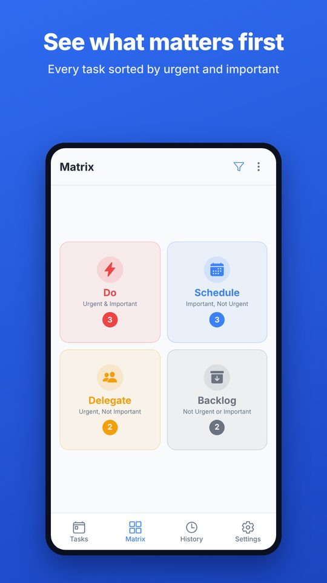
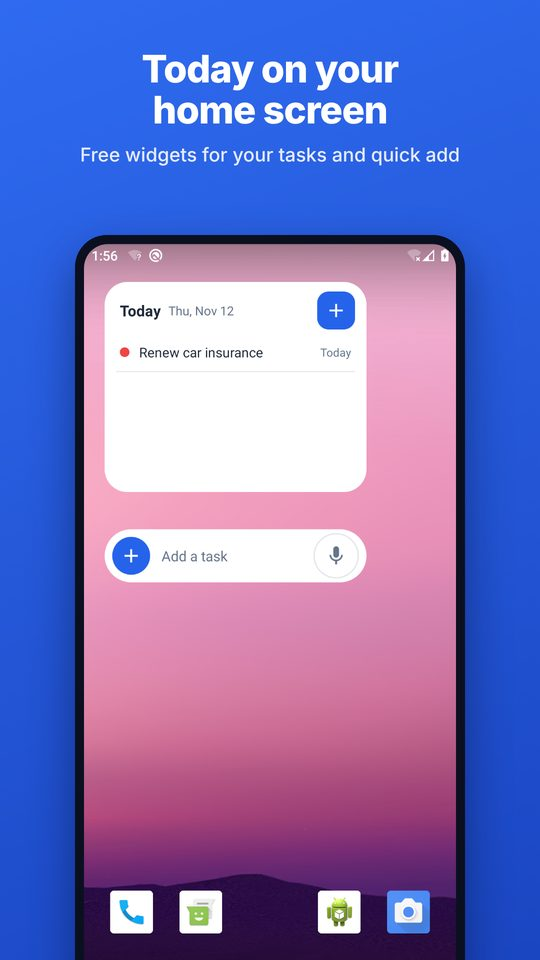
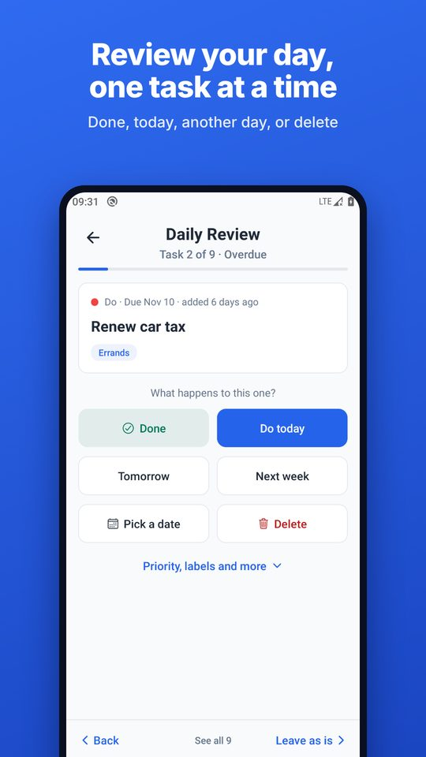
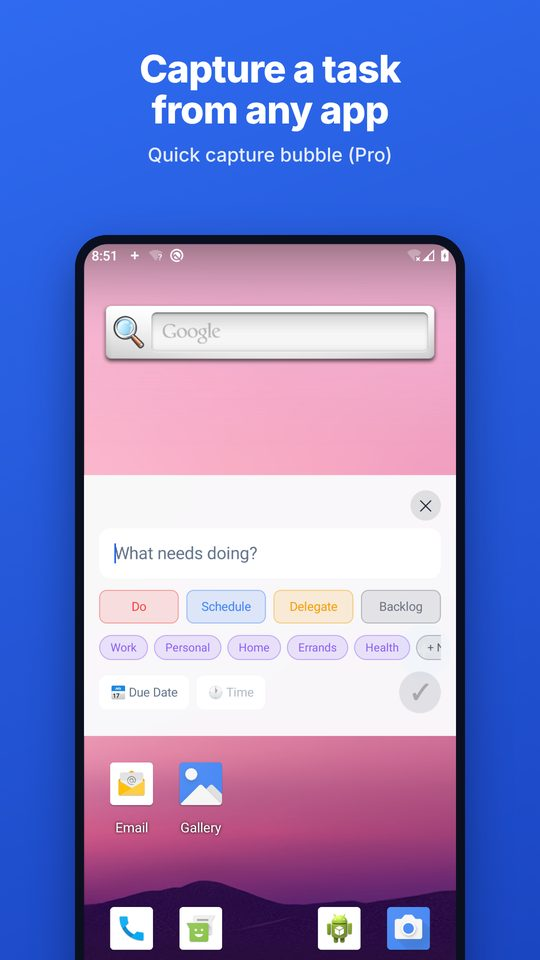

Sort your to-do list by urgent and important
A free printable Eisenhower Matrix, a short guide to using it, and a private Android app that does the sorting for you.
Get the app on Google Play Download the printable templateWhat is the Eisenhower Matrix?
The Eisenhower Matrix is a way of deciding what to do next by asking two questions about every task: is it urgent, and is it important? The answers put the task in one of four boxes.
It is named after Dwight D. Eisenhower, who is credited with the line "What is important is seldom urgent and what is urgent is seldom important." Stephen Covey later made the four boxes popular in The 7 Habits of Highly Effective People.
How to use it in five minutes
- Write everything down. Empty your head onto one list before sorting anything.
- Ask "is it important?" first. Important means it moves something you care about. Urgency is easier to feel, so judge it second.
- Then ask "is it urgent?" Urgent means there is a real cost if it is not done soon.
- Give every Schedule task a date. This box holds what matters most and it never shouts. Without a date it does not get done.
- Review once a day. For each overdue task decide: done, today, another day, or drop it.
Free printable template
One page, four boxes, room to write. Print it, or keep it on your desk as a daily sheet.
Free for personal and classroom use. No email needed.
The Android app
Eisenhower Matrix: To-Do List does the sorting for you. Mark a task as urgent, important, or both, and it lands in the right box.




Free
- The matrix, with daily and monthly calendar views
- Home screen widgets for today's tasks and quick add
- Speak a task and the date and time fill in
- Subtasks, recurring tasks, labels and reminders
- A daily review that walks through overdue tasks one at a time
- Export and import of your data
Pro, one payment
- A floating bubble to capture a task from inside any other app
- Bulk add: paste a list and sort it into the boxes
- Automatic backups to a folder you choose
Pro is free to try for 7 days with no card and no sign-up. There is no subscription.
Private by design
No account, no ads, no tracking and no analytics. Your tasks stay on your phone unless you choose to back them up or share them. Read the privacy policy.
From the blog
- 50 real tasks sorted into the four boxes
- Urgent or important? Ten tasks people get wrong
- The Eisenhower Matrix for students in exam season
Questions
Is the app really free?
Yes. The whole method, widgets, reminders, recurring tasks and export are free for good. Pro is a single optional purchase for a few time-savers.
Do I need an account?
No. There is nothing to sign up for and nothing is sent to a server.
Is there an iPhone version?
Not yet. It is Android only for now.
What is the difference between urgent and important?
Urgent tasks have a real cost if they are not done soon. Important tasks move something you care about. Many tasks are one without the other, which is the whole point of the matrix.
What should go in the fourth box?
Tasks that are neither urgent nor important. Some people call the box Delete or Eliminate. The app calls it Backlog, because many of these are worth a second look before they are dropped.
How do I get in touch?
Email eisenhower.mtrx@gmail.com.